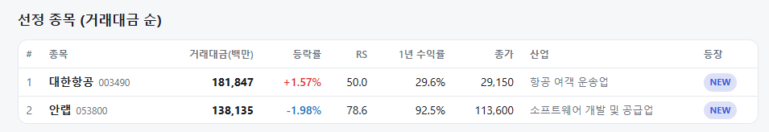
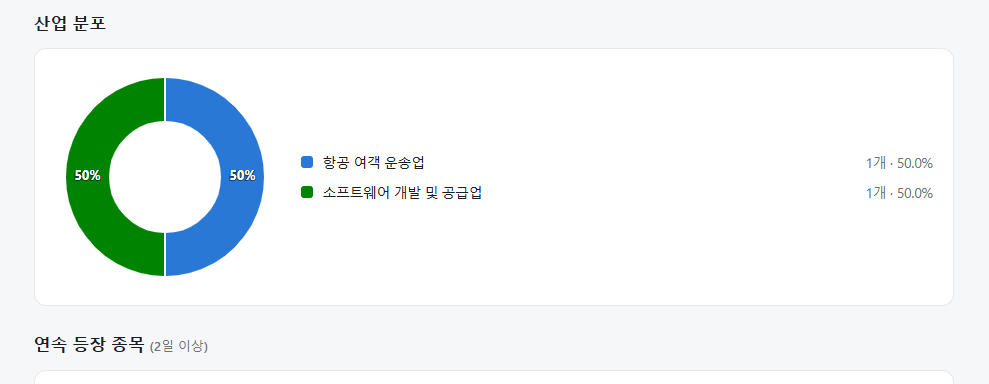
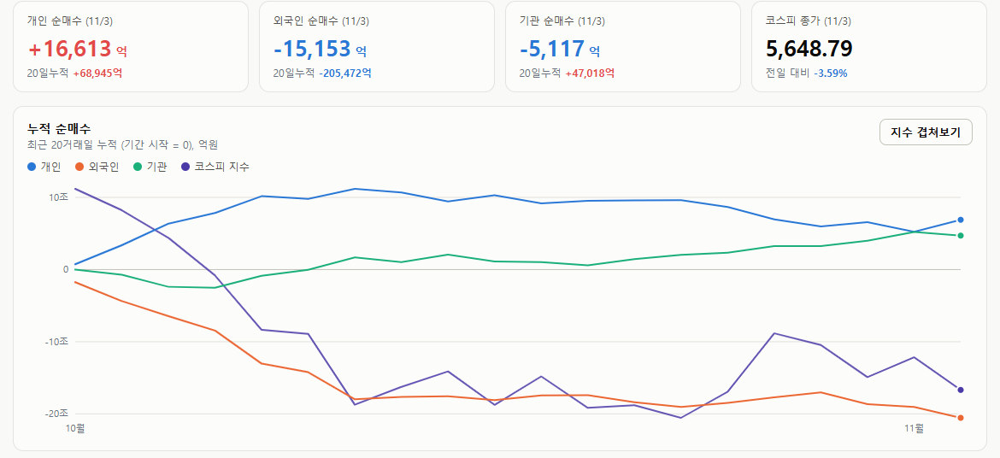

매일의 주도주 정리를 위해 기록합니다.
연속적으로 나온 종목들 또는 상승 후 조정받는 종목 위주로 리서치 해보시면 좋을 것 같습니다.


*오늘의 퀀트픽은 없습니다.
#주도섹터
운송
주요 업종 및 종목: 운송(+9.05%), 항공사(+12.89%), 다각화된통신서비스(+1.40%), 대한항공(+1.57%), 한진칼.
분석: 시장 폭락 속에서 운송 업종이 +9.05%, 세부 업종인 항공사가 +12.89% 폭등하며 이례적인 강세를 보였습니다. 스크리닝에도 대한항공(RS 50.0)이 신규 진입하며 항공주 중심의 단기 헷지 자금 유입을 정량적으로 입증했습니다.
#조정섹터
2차전지, 반도체, 기계 및 통신장비
주요 업종 및 종목: 전자장비와기기(-6.96%), 석유와가스(-6.36%), 전기제품(-5.97%), 전자제품(-5.79%), 전기장비(-5.08%), 통신장비(-5.04%), 반도체와반도체장비(-4.79%), 삼성SDI(-8.64%), 삼성전기(-7.04%), 두산에너빌리티(-6.46%), SK스퀘어(-5.58%), SK하이닉스(-5.30%), LG에너지솔루션(-4.78%), 삼성전자(-4.15%).
분석: 전자장비와기기(-6.96%), 2차전지가 포함된 전기제품(-5.97%) 업종이 급락 최상단을 장악했습니다. 전일 방어주였던 삼성SDI(-8.64%)가 폭락했고, SK하이닉스(-5.30%)와 삼성전자(-4.15%)를 필두로 한 반도체 메가 캡과 기계(-4.84%) 등 인프라 전반이 외국인의 매도에 하락했습니다.
#수급동향

코스피 지수는 -3.59% 하한 5,648.79로 마감하며 하루 만에 상승분을 모두 뱉어냈습니다. 코스닥 지수 역시 -4.08% 하락한 704.39를 기록하며 심리적 지지선인 700선을 위협받았습니다.
외국인 1.5조 원 투매 및 기관 5,100억 원 스위칭: 유가증권시장에서 외국인 투자자는 무려 1조 5,153억 원(20일 누적 -20조 5,472억 원)을 순매도하며 대형주 패시브 이탈을 가속했습니다. 전일 1.2조 원을 샀던 기관 투자자 역시 하루 만에 5,117억 원(20일 누적 +4조 7,018억 원)을 순매도하며 지수 하락을 부추겼습니다. 개인 투자자가 1조 6,613억 원을 순매수하며 방어에 나섰으나 역부족이었습니다.
유가도 금리도 내려왔는데 왜 안 오르나 — 살 사람이 자리를 비운 시장
루비오 국무장관의 이란 외교 발언으로 WTI가 7% 급락해 100달러 아래로, 10년물은 4.91%로 4주 연속 하락, ISM 가격지수도 내려왔습니다. 나스닥100은 장 초반 +1.3%였다가 오전 10시 반 이후 뒤집혀 -3% 근처, 5시간 만에 시총 1조 달러가 빠졌고 고점 대비 -10% 조정 국면에 들어갔습니다.
① 가격은 뉴스가 아니라 '사는 손'이 정한다
지난달 21일 "나쁜 뉴스에 덜 빠지면 매도 후반"이라고 썼습니다. 어제는 그 반대인 좋은 뉴스에 안 오르는 날이었습니다. 가격을 움직이는 것은 뉴스가 아니라 그 뉴스에 주문을 내는 한계 매수자이고, 호재에 안 오른다는 것은 그 자리가 비어 있다는 뜻입니다. 누가 비웠는지 숫자가 있습니다.
수급: 모건스탠리 집계로 헤지펀드는 6월 이후 누적으로 총익스포저의 8% 이상을 줄였습니다. 10월 중순에는 숏을 쌓으며 Gross가 잠깐 늘었지만(19일 글), 실적 주간을 지나며 롱 매도와 숏 커버가 함께 나와 다시 줄었고, 그 결과 2023년 초 이후 처음으로 AI 트레이드에 언더웨이트입니다. 디그로싱 중인 펀드는 호재에 사지 않고 반등을 팔 기회로 씁니다.
정치: 선거 전날 방향성 노출을 늘리는 투자자는 적습니다. 옵션 시장이 선거일에 별도의 변동성 프리미엄을 붙여 미리 잡는 비용이 비싸고, 예측시장이 민주당 전면 승리를 70~80%로 보는 가운데 2년 교착을 가격에 넣는 중입니다. 결과가 어느 쪽이든 오늘 밤 지나면 이 대기 요인은 사라집니다.
AI 조달 피로:오라클은 지난주 “2030년까지 추가 조달은 200억 달러가 상한”이라고 해 11% 올랐는데, 어제 그 200억 달러를 고점 대비 -54%인 주가에서 주식까지 섞어 당장 조달한다고 하자 -8.8%였습니다. 상한이라 믿었던 숫자가 시작점으로 드러난 것이고, 앤트로픽 8,900억 달러 약정과 마벨의 고가 인수가 그 의심을 산업 전체로 넓혔습니다. 조달은 분기마다 반복되므로 선거처럼 하루에 끝나는 요인이 아닙니다.
② 매도의 끝인가, 중간인가
"좋은 뉴스에 안 오른다"는 보통 매도 중반의 신호입니다. 다만 세 요인의 시한이 다릅니다. 정치는 오늘 밤 끝나고, 수급은 되돌림이 빠른 종류입니다. AI 언더웨이트는 다시 사야 할 자리가 그만큼 비어 있다는 뜻이고, 디그로싱은 멈추는 순간 반대로 작동합니다. 남는 것은 조달 피로 하나이고, 이것은 가격이 아니라 시간이 풉니다.
통계도 같은 쪽입니다. 중간선거 다음 날 다우 상승 확률은 84%, 중간선거 해 11월은 평균 +2.7%에 상승 확률 79%입니다. 10월 기술주에서 필수소비재로의 로테이션은 2001년 이후 최대로, 포지션 재편이 후반이라는 신호입니다.
③ 한국에는 무엇이 남나
유가와 금리 하락은 한국에 미국보다 좋은 재료입니다. 그런데 코스피는 반도체 비중 때문에 AI 피로를 더 크게 받고, 그것이 오늘 하락의 이유입니다. 다만 한국은 10월에 두 번의 급락을 치렀고 삼성·하이닉스는 2028년까지의 공급 부족과 200조원 환원으로 답했습니다.
한국은 10월에 두 번의 급락으로 가격을 이미 많이 치른 상태라, 추가 가격 조정보다는 횡보하며 기간 조정을 거칠 가능성이 높아 보입니다.
오늘 하루도 수고하셨습니다!